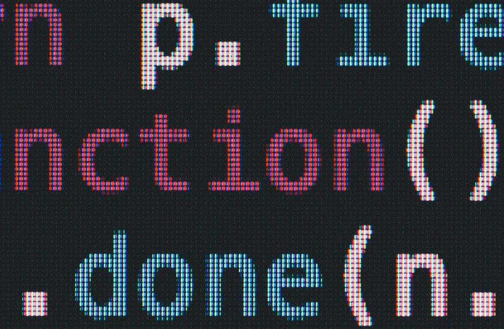

Experience
Over the course of my decade-long career, I have worked for various types of companies, gaining experience in a wide range of projects, including big SAAS initiatives, educational software, giant webshops, and agency work for large commercial clients. As a Front-end developer, I take pride in my deep knowledge of specific browser issues, and I do not rely on front-end frameworks or templates. I have worked with many different CMSs, from custom-built management systems to popular platforms like WordPress and Umbraco.
In addition, my experience with PHP and SQL databases has given me a core understanding of back-end techniques, enabling me to edit and manage these systems without external assistance.
